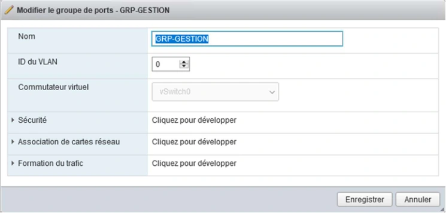
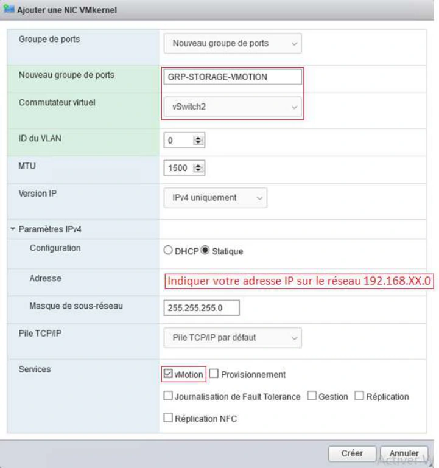
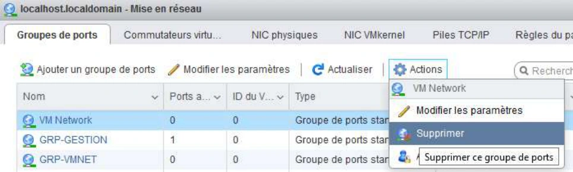

Module 06 — Gestion du réseau vSphere¶
La transcription du support Drive et l’aide pédagogique sont séparées pour rendre leur provenance explicite.
SOURCE DRIVE · TRANSCRIPTION DU SUPPORT
Le contenu des documents du dossier TSSR est transcrit ci-dessous, page par page. Les textes et tableaux sont intégrés à la page Web. Aucun fichier PDF, aucune diapositive entière ni aucune reproduction de page n’est affiché. Seuls des croquis ou visuels isolés et vérifiés peuvent accompagner la transcription. Les versions et les consignes restent celles des supports de formation. Les compléments IA sont conservés dans leur onglet distinct.
Support · Module 06 - Support de cours · 11 pages transcrites
Module 06 – Gestion du réseau
Gestion du réseau
Objectifs
- Configurer le réseau d’un ESXi afin de répondre à des besoins ciblés
Gestion du réseau
Les VLAN
Définition
- Un VLAN (Virtuel LAN) est un réseau logique indépendant.
- Les commutateurs (ou switch) permettent l’interconnexion réseau d’un ensemble d’éléments. Tous les éléments raccordés à un même switch peuvent ainsi communiquer entre eux.
- La mise en œuvre de VLAN permet de définir des contextes isolés afin que seuls les éléments d’un même VLAN puissent communiquer ensemble.
| Équipements | Ports |
|---|---|
| Postes clients | 1 à 12 |
| Serveurs | 13 à 18 |
| Téléphones | 19 à 24 |
Les VLAN
Intérêt de mise en œuvre
- La segmentation du réseau au moyen de VLAN permet :
- D’accroître la sécurité
- D’accroître les performances en limitant les domaines de diffusion
- De prioriser certains flux
- D’optimiser l’utilisation du matériel
- Les limites
- Nécessite une prise en charge par les commutateurs
- Nécessite une configuration
Les VLAN
Prise en charge 802.1Q
- Les VLAN peuvent être mis en œuvre à différents niveaux du modèle OSI :
VLAN de niveau 1
L’affectation à un VLAN est liée au port de raccordement du switch
VLAN de niveau 2
L’affectation du VLAN est liée à l’adresse MAC de l’équipement
VLAN de niveau 3
L’affectation du VLAN est liée à l’adresse IP de l’équipement
- Leur affectation peut être réalisée par :
- Les équipements d’interconnexion : les switchs
- Les équipements terminaux (postes de travail, serveurs, téléphones IP)
- La norme 802.1Q correspond au standard de prise en charge
Les VLAN
Intégration d’un identifiant de VLAN
- L’ajout d’informations d’identification de VLAN se matérialise par la modification de l’en-tête Ethernet des trames IP
Adresse MAC Destination → Adresse MAC Source → TAG VLAN 802.1Q (4 octets) → Type / longueur → Données → CRC.
| Champ | Longueur | Valeur ou information du schéma |
|---|---|---|
| TPID (Tag Protocole Identifier) | 16 bits | 0x8100 |
| TCI (Tag Control Identifier) | 3 bits | Priorité utilisateur |
| TCI (Tag Control Identifier) | 1 bit | Canonical Format Indicator |
| TCI (Tag Control Identifier) | 12 bits | VLAN ID |
- Parmi les informations ajoutées figurent :
- Une priorité (valeur de 0 à 7) permettant de mettre en place de la qualité de service 802.1 P
- L’identifiant de VLAN (valeur de 1 à 4094)
Les VLAN
Le trunking
- Généralement, les réseaux d’entreprises intègrent une multitude de switchs. Les ports utilisés pour le raccordement entre les switchs doivent être identifiés comme « port trunk ».
- Lors de la configuration d’un port en « port trunk », on indique les trames de quels VLAN doivent se propager.
Le schéma représente trois commutateurs à Nantes. Les ports de chacun sont numérotés de 1 à 24.
| Commutateur | Groupes de ports représentés | Port Trunk |
|---|---|---|
| Nantes - RDC | Postes clients – vlan3 (ports 1 à 12) · téléphones – vlan2 (ports 13 à 21) | 23 ↔ port 23 du cœur de réseau |
| Nantes Cœur de réseau | Les ports 23 et 24 relient le cœur aux deux commutateurs d’accès | 23 ↔ RDC · 24 ↔ étage 1 |
| Nantes – Étage 1 | Postes clients – vlan3 (ports 1 à 7) · téléphones – vlan2 (ports 8 à 13) · serveurs – vlan5 (ports 14 à 19) | 24 ↔ port 24 du cœur de réseau |
Le repère Port Trunk du dessin montre vlan3 et vlan2.
Les VLAN
Critères de configuration sur les switchs
- Sur les commutateurs, la configuration à mettre en œuvre doit prendre en considération les aspects suivants :
- Le type d’utilisation du port
| Type de port | Utilisation |
|---|---|
| Port Access | Port utilisé pour communiquer avec un équipement terminal, un seul VLAN peut lui être affecté |
| Port Trunk | Port utilisé pour la liaison vers d’autres commutateurs, un ensemble de VLAN peut lui être affecté |
- L’état d’activation du marquage
| Marquage | Effet |
|---|---|
| Marquage actif | Le marquage des paquets (champ TAG VLAN) est propagé à leur sortie du switch |
| Marquage inactif | Le champ TAG VLAN est supprimé avant la remise de la trame |
- Le(s) VLAN(s) à affecter aux ports : à chaque port sera associé
| Affectation | VLAN |
|---|---|
| Le VLAN par défaut | VLAN1 |
| D’autre(s) VLAN(s) | Le(s) VLAN(s) choisis |
Les VLAN
Configuration sur les équipements terminaux
- Certains équipements terminaux sont compatibles avec la norme 802.1Q, leur affectation à un VLAN est gérée depuis leur configuration. Ces équipements doivent être connectés à des ports configurés en mode trunk du switch.
- Quelques exemples de type d’équipements terminaux pouvant prendre en charge la norme 802.1Q :
- Des pilotes de carte réseau
- Des systèmes d’exploitation
- Des téléphones IP
Informations dans les visuels du support
- La capture d’un réglage d’appartenance au VLAN propose Par défaut ou VLAN spécifique. L’exemple choisit le VLAN spécifique 100.

Gestion du réseau
Les composantes vSphere du
réseau
Les composantes vSphere du réseau
Le vSphere Standard Switch - VSS
- C’est le composant central de gestion du réseau de l’ESXi
- Il est géré indépendamment pour chaque ESXi de l’infrastructure
VMware
vSwitch0
- Liaison
- Un VSS est lié à un ou plusieurs groupements de ports
- Un VSS peut être raccordé à une ou plusieurs cartes réseau
Par défaut le vSwitch0 est créé, il est utilisable :
- Pour les tâches de gestion de l’ESXi
- Par les machines virtuelles Il est lié à la carte réseau de l’ESXi présente à l’installation.
Les composantes vSphere du réseau
Le vSwitch distribué - VDS
- À la différence des vSwitch standard, le vSwitch distribué est un
objet commun aux éléments d’une même infrastructure vSphere.
- Un même VDS est utilisable par un ensemble d’hôtes.
- Sa gestion se réalise depuis le vCenter de l’infrastructure.
- L’utilisation de VDS permet d’éviter toute interruption de service en cas de migration de VM.
Cette fonctionnalité requiert le niveau de licence Enterprise plus.
Les composantes vSphere du réseau
Les groupements de ports
ESXi
VMware
- Ils définissent un type d’utilisation du réseau pour l’ESXi parmi les suivants :
Networking
Type
Utilisation
vSwitch0
VM Network
Création de réseau à destination des
machines virtuelles
VMkernel
Création de réseau à destination des besoins de
l’infrastructure de virtualisation
Port group de
type Virtual
- Des machines liées à des groupements de ports distincts d’un même vSwitch ne peuvent pas communiquer entre elles.
machine
Port group de type VMkernel
La segmentation en VLAN peut être configurée
depuis les groupements de ports.
Les composantes vSphere du réseau
Les VMNIC ou pNIC
ESXi
- Ce sont les cartes réseau physiques de l’ESXi
pNIC
Objet vSphere associé à une
VMware
VMNIC
Carte physique de l’hôte
VMNIC
pNIC
- Deux dénominations s’appliquent aux cartes réseau physiques des hôtes
- Les contraintes de liaison vmnic <=> vSwitch
Networking
VMNIC
- Chaque carte peut être liée à un seul vSwitch
- Plusieurs cartes peuvent être liées au même vSwitch
vSwitch0
Les composantes vSphere du réseau
Le regroupement de cartes réseau (Teaming)
- Il est possible de regrouper un ensemble de cartes réseau d’un ESXi.
- Cela se traduit par :
Un adressage unique
Si les cartes sont liées à un groupement de port typé
VMkernel
Un débit cumulé
Mode de configuration actif - actif
Un gain de tolérance de pannes
Mode de configuration actif - passif
- Prérequis de mise en œuvre :
- Disposer au minimum de 2 VMNIC raccordés à un switch virtuel
- Mise en œuvre, la configuration peut se faire :
- Par la sélection d’un ensemble de cartes, lors de la création d’un switch virtuel
- Par l’ajout de carte(s) au groupement de ports d’un switch virtuel existant
Les composantes vSphere du réseau
Teaming – répartition de charge
- La configuration du teaming permet de déterminer le mode de fonctionnement de la répartition de
charge :
- Par VM : chaque port du vSwitch (soit indirectement chaque carte réseau de VM) est lié à un VMNIC
- Par adresse matérielle (MAC) de la source du paquet
- Par paquet : en fonction des adressages de source et destination, un algorithme détermine la VMNIC à utiliser
13 14 15 16 17 18
19 20 21 22 23 24
Par ordonnancement des cartes : pas de répartition de charge, seule la défaillance d’une carte entraîne l’utilisation de la suivante
Les composantes vSphere du réseau
Les vNIC
ESXi
pNIC
VMware
- Ce sont les cartes réseau présentées aux machines virtuelles
VMNIC
Networking
vSwitch0
- Elles peuvent être connectées ou non à un groupement de ports de type Virtual machine existant
vNIC
Port group de
type Virtual
vNIC
machine
La segmentation en VLAN peut être configurée au niveau des vNIC
Port group de type VMkernel
Les composantes vSphere du réseau
Lien entre les VMNIC et les besoins réseau
- Un hôte dispose généralement d’un ensemble de cartes réseau
- Ces cartes permettent de couvrir les multiples besoins réseau de l’infrastructure vSphere
Réseau pour
Gestion de l’infrastructure
Déplacement
de VM
Flux iSCSI
Très haute disponibilité
les VM
- Il est important de recenser les besoins, d’identifier ceux que l’on souhaite regrouper et ceux que l’on souhaite isoler
Réseau pour
Gestion de l’infrastructure
Déplacement
de VM
Flux iSCSI
Très haute disponibilité
les VM
VMNIC1
VMNIC
2
VMNIC3
VMNIC4
Les composantes vSphere du réseau
Illustration de raccordement réseau global
SW3 SW2 SW1
Physique
Hôte
Stockage baie
de disques
vSwitch 1
vSwitch 2
Groupement de ports
Groupement de ports GESTION (VMkernel)
vMotion (VMkernel)
STOCKAGE
(VMkernel)
Logique
vSwitch 0
VM
Groupement de ports
VM PROD (VM Network)
Les composantes vSphere du réseau
Les VLAN en environnement virtualisé
Switch
ESXi
pNIC
VMware
- En environnement vSphere, les VLAN peuvent affectés :
VMNIC
Networking
- Au niveau du switch (un seul VLAN ciblera alors tout le trafic)
- Sur des groupements de ports
- Sur des vNIC
- Si les VLAN sont affectés par l’hyperviseur, le switch doit être configuré en mode trunk et lié à tous les VLAN nécessaires aux composantes d’infrastructure vSphere et aux VM.
vSwitch0
vNIC
Port group de
type Virtual
vNIC
machine
Port group de type VMkernel
Référence du document : 1No0xQoKZ0i6p59XLY7nhFdyXYZHFW-wH · SHA-256 89509a521e376c8b…
Énoncé · TSSR110-Virtualisation_Mise en Situation - Module 6 - Gestion Reseaux · 3 pages transcrites
Énoncé :
Atelier N°4
TP du Module 06 – Gestion Réseau d’une infrastructure vSphere
Avant de démarrer ce TP, il convient d’avoir suivi les prérequis du Module 6.
Durée estimée
1 heure
Objectif :
Gérer les réseaux des ESXi
Prérequis :
Disposer de deux hyperviseurs ESXi fonctionnels (Atelier 3 réalisé)
Énoncé :
Les hyperviseurs virtualisés grâce à VMware Workstation disposeront de cartes réseau supplémentaires. Cela permettra de séparer les différents flux circulant entre les hyperviseurs, les machines virtuelles qu’ils hébergent et les systèmes extérieurs.
Dans cet atelier, les flux de stockage (communication avec des NAS/SAN etc.), de gestion (connexion aux hyperviseurs etc.) et liés aux machines virtuelles seront séparés via plusieurs vSwitchs/cartes réseau physiques.
Sur Workstation
- Arrêter (proprement) l’hyperviseur ESXi1 et ESXi2, et leur ajouter trois cartes réseau en « bridge »
- Démarrer ESXi1
Sur ESXi1
- Modifier la configuration du vSwitch0 : -
Ne conserver que le groupement de port actuel « Management Network » et le renommer GRP-GESTION pour le seul trafic de gestion.
- Créer les vSwitchs supplémentaires comme indiqué sur le tableau ci-dessous :
| vSwitch1 | vSwitch2 | |
|---|---|---|
| Nom groupement de ports lié | GRP-VMNET | GRP-STORAGE-VMOTION |
| Type de ports | Machines virtuelles | VMKernel |
| Fonction | Communication entre VMs | Sera dédié à iSCSI + vMotion |
| Adresse Interface VMKernel (VMK) | – | 192.168.xx*.1/24 |
| Carte(s) réseau associée(s) | vmnic1 et vmnic2 | vmnic3 |
Ne pas toucher aux identifiants de VLAN
Sur ESXi2
- Reproduire les modifications réseau apportées sur ESXi1 en utilisant l’adresse IP :
- Pour le groupement de port GRP-STORAGE-VMOTION : 192.168.xx.2/24
Schéma récapitulatif :
Référence du document : 1vAzxgDTsDF2nNPEMYulSYFk88rhaGcKc · SHA-256 da5e61a5ec5277fc…
Correction · TSSR110-Virtualisation_Mise en Situation - Module 6 - Gestion Reseaux - Solution · 11 pages transcrites
Correction originale : à consulter après avoir tenté l’exercice.
Solutions :
Atelier N°4
TP du Module 06 – Gestion Réseau d’une infrastructure vSphere
Avant de démarrer ce TP, il convient d’avoir suivi les prérequis du Module 5.
Durée estimée
1 heure
Objectif :
Gérer les réseaux des ESXi
Prérequis :
Avoir réalisé l’atelier n°3 (Module 5)
Énoncé :
Les hyperviseurs virtualisés grâce à VMware Workstation disposeront de cartes réseau supplémentaires. Cela permettra de séparer les différents flux circulant entre les hyperviseurs, les machines virtuelles qu’ils hébergent et les systèmes extérieurs.
Dans cet atelier, les flux de stockage (communication avec des NAS/SAN etc.), de gestion (connexion aux hyperviseurs etc.) et liés aux machines virtuelles seront séparés via plusieurs vSwitchs/cartes réseau physiques.
Sur Workstation
- Arrêter (proprement) l’hyperviseur ESXi1 et ESXi2, et leur ajouter trois cartes réseau en « bridge »
- Depuis la console locale ESXi1, appuyer sur F12
- Renseigner le MDP Root, puis cliquer sur « Forcefully terminate … » et enfin touche
F2.
- Dans les paramètres de la VM ESXi1, ajouter 3 cartes réseau en bridge
- Démarrer ESXi1
Sur ESXi1
- Modifier la configuration du vSwitch0 : -
Ne conserver que le groupement de port actuel « Management Network » et le renommer GRP-GESTION pour le seul trafic de gestion.
- Cliquer sur « Mise en réseau »
- Changement du nom « Management Network » en « GRP-GESTION »


- Créer les vSwitchs supplémentaires comme indiqué sur le tableau ci-dessous :
| Paramètre | vSwitch1 | vSwitch2 |
|---|---|---|
| Nom groupement de ports lié | GRP-VMNET | GRP-STORAGE-VMOTION |
| Type de ports | Machines virtuelles | VMKernel |
| Fonction | Communication entre VMs | Sera dédié à iSCSI+ vMotion |
| Adresse Interface VMKernel (VMK) | - | 192.168.xx*.1/24 |
| Carte(s) réseau associée(s) | Vmnic1, Vmnic2 | Vmnic3 |
Ne pas toucher aux identifiants de VLAN
- Se connecter via navigateur Internet sur l’interface d’ESXi1
1)° Ajout du vSwitch Standard Virtuel « vSwitch1 »
- Dans le menu « Mise en réseau », cliquer sur onglet « Commutateurs virtuels »
- Puis cliquer sur « Ajouter un commutateur… »
- Ensuite lui donner le nom « vSwitch1 »
- Ajouter la deuxième carte réseau physique « vmnic2 » au vSwitch1
2)° Ajout du vSwitch Standard Virtuel « vSwitch2 »
- Dans le menu « Mise en réseau », cliquer sur « Commutateurs virtuels »
- Puis cliquer sur « Ajouter un commutateur… »
- Ensuite lui donner le nom « vSwitch2 »
3°) Ajout du groupement de port « GRP-VMNET »
- Dans le menu « Mise en réseau », onglet « Groupes de ports », cliquer sur « Ajouter
un groupe de ports »
- Modifier le Nom en : GRP-VMNET Sélectionner le Commutateur vSwitch1 puis Ajouter
4°) Ajout d’une interface virtuel VMKernel
- Dans le menu « Mise en réseau », onglet « NIC VMkernel », cliquer sur « Ajouter
une NIC… »
- Renseigner les champs comme suit :


5°) Retrait groupement de port « VM Network »
- La VM « SRV-1 » utilise le groupement de port « VM Network », nous empechant de
le retirer. Il faut donc changer le groupement de port sur la VNIC de la VM « SRV-1 » de « VM Network » à « GRP-VMNET »
- Désormais, nous pouvons supprimer le groupement de port « VM Network »
Cela donne au final :
Sur ESXi2
- Reproduire les modifications réseau apportées sur ESXi1 en utilisant l’adresse IP :
- Pour le groupement de port GRP-STORAGE-VMOTION : 192.168.xx.2/24


Schéma récapitulatif :
Référence du document : 1HSWdLoQeka8x86zyHULWXauf0IGWW-d2 · SHA-256 9cccc6951103fe48…
Complément IA / externe au cours — fiche pédagogique du portail
Cette fiche contient une reformulation et des aides d’apprentissage rédigées par IA. Elle est distincte de la transcription des documents du Drive et ne la remplace pas. Les schémas de synthèse de cette fiche sont des illustrations IA / externes au cours, sauf les captures explicitement attribuées à un document source.
Le laboratoire dispose de deux ESXi. On sépare les flux de gestion, des VM et de stockage ou de vMotion en configurant les commutateurs virtuels et les interfaces des hôtes.
Objectifs¶
- Lire un VLAN et comprendre le marquage 802.1Q.
- Identifier un VSS, un VDS, un groupe de ports, une vNIC et un VMkernel.
- Répartir les quatre cartes du laboratoire en gardant l’accès de gestion.
- Déplacer la vNIC invitée et vérifier les réseaux des deux hôtes.
1. Segmentation et marquage¶
Un VLAN organise une partie du réseau Ethernet en domaine de diffusion distinct. Le support classe les modes d’affectation par port, par adresse MAC ou par adresse IP. La configuration de l’infrastructure doit transporter les VLAN nécessaires jusqu’aux équipements qui les utilisent.
Le marquage IEEE 802.1Q ajoute quatre octets à la trame. Le support distingue le TPID 0x8100, la priorité sur trois bits, le bit appelé CFI dans ce document et l’identifiant VLAN sur douze bits. Le tableau cite les identifiants de VLAN 1 à 4094 et les niveaux de priorité 0 à 7 liés à 802.1p.
| Port ou réglage | Rôle dans les exemples |
|---|---|
| Access | Rattacher un équipement à un VLAN, généralement avec remise de trames non marquées. |
| Trunk | Transporter plusieurs VLAN autorisés entre équipements. |
| Marquage actif | Conserver le tag lorsque le destinataire de la liaison doit lire le VLAN. |
| Marquage inactif | Livrer une trame sans tag à l’équipement terminal selon le réglage de port. |
Le support mentionne VLAN 1 comme valeur par défaut dans son environnement. Il illustre des équipements capables de traiter un tag, tels que des téléphones IP, pilotes et systèmes d’exploitation. Dans l’atelier, les identifiants VLAN existants restent en place.
2. Relier une interface au réseau physique¶
| Objet | Fonction |
|---|---|
| VSS | Commutateur standard configuré localement sur un ESXi. |
| VDS | Commutateur distribué géré avec vCenter pour plusieurs hôtes. |
| Groupe de ports | Ensemble de réglages de connexion, dont le VLAN selon le scénario. |
| vNIC | Carte présentée au système invité. Elle se raccorde à un groupe de ports de VM. |
| VMkernel | Interface réseau de l’hôte pour un service d’infrastructure, comme la gestion ou vMotion. |
| VMNIC ou pNIC | Carte physique de l’ESXi employée comme liaison montante. |
Un VSS peut porter plusieurs groupes et plusieurs VMNIC. Dans le scénario du support, une VMNIC appartient à un seul commutateur virtuel. Les VLAN peuvent être traités au niveau du commutateur physique, des groupes de ports ou des équipements qui marquent leurs propres trames. Vérifier le chemin de bout en bout avant de conclure à l’isolation.
Portée du groupe de ports et du VDS
Deux noms de groupes distincts ne garantissent pas une séparation si leur réseau effectif est le même. Vérifier le VLAN, les liaisons montantes et le filtrage. Le VDS centralise la configuration de plusieurs hôtes. Les autres conditions d’une migration restent à vérifier.
3. Comprendre le regroupement de cartes¶
Le teaming combine plusieurs liaisons montantes. Le support distingue le mode actif-actif, associé à la distribution de flux, et le mode actif-passif, associé au secours en cas de panne. Il présente la sélection par port de VM, le hachage MAC source, le hachage IP et l’ordre de bascule.
| Besoin | Vérification |
|---|---|
| Distribuer plusieurs flux | Identifier la politique et observer la répartition sur les uplinks. |
| Assurer un secours | Définir l’ordre des cartes actives et de secours, puis vérifier la bascule dans le cadre prévu. |
| Utiliser IP hash | Vérifier que le commutateur physique est configuré selon les exigences de cette politique. |
Le débit total d’un ensemble de liaisons n’indique pas le débit d’une session unique. Le support associe aussi le VDS à Enterprise Plus dans son contexte historique. Politiques de teaming VMware · Répartition IP hash
4. TP guidé — Séparer les flux sur deux ESXi¶
Durée du support. Environ une heure. Utiliser les deux ESXi préparés à l’atelier 3. Arrêter proprement l’invité puis les hôtes avant d’ajouter chacun trois cartes Bridged dans Workstation. La terminaison forcée illustrée dans le corrigé ne correspond pas à l’arrêt propre demandé par l’énoncé.
A. Établir le plan du premier hôte¶
| Flux | Commutateur et groupe | Liaison montante | Interface ou réglage |
|---|---|---|---|
| Gestion | vSwitch0 et GRP-GESTION |
vmnic0 |
VMkernel et adresse déjà en service |
| Machines virtuelles | vSwitch1 et GRP-VMNET |
vmnic1 et vmnic2 |
Groupe de ports pour les vNIC invitées |
| Stockage et vMotion | vSwitch2 et GRP-STORAGE-VMOTION |
vmnic3 |
VMkernel du réseau de laboratoire en /24, service vMotion activé |
Illustration IA / externe au cours — chemin de chaque flux sur un ESXi.
B. Créer les groupes et déplacer l’invité¶
- Démarrer ESXi1. Vérifier les quatre cartes et noter celle utilisée par l’accès actuel.
- Garder le commutateur de gestion et renommer son groupe selon le laboratoire. Vérifier que le Host Client reste accessible.
- Créer le commutateur des VM avec deux liaisons montantes. Y créer le groupe
GRP-VMNET. - Créer le commutateur de stockage avec la quatrième carte. Ajouter son VMkernel, renseigner l’adresse /24 prévue et activer vMotion sur cette interface.
- Dans les réglages de la VM invitée, déplacer sa vNIC vers
GRP-VMNET. Contrôler le rattachement avant de retirer l’ancien groupe des VM. Le groupe de gestion reste en service. - Laisser les VLAN inchangés, conformément à l’énoncé.
C. Reproduire sur ESXi2 et contrôler¶
- Configurer les mêmes rôles de commutateurs et de groupes sur ESXi2.
- Donner au second VMkernel de stockage une autre adresse du même /24. Les repères du cours sont
192.168.XX.1/24et192.168.XX.2/24, à remplacer selon le laboratoire. - Contrôler l’accès de gestion sur chacun des deux hôtes. Comparer les groupes, les cartes et le service vMotion.
- En complément, tester la connectivité IP depuis le VMkernel concerné avec
vmkping -I <vmk-stockage> <ip-vmkernel-pair>. Adapter les deux paramètres au laboratoire. Le résultat porte sur l’accès IP. La mise en service du stockage iSCSI et la migration vMotion seront testées dans leurs ateliers. Vérifier un accès depuis un VMkernel
À retenir¶
La vNIC d’une VM utilise un groupe de ports. Le VMkernel fournit une connexion à l’hôte pour un service d’infrastructure. Dans l’atelier, garder l’accès de gestion, déplacer la VM sur le nouveau groupe et retirer l’ancien groupe dans cet ordre.
Mini-quiz — 5 questions¶
- Que transporte le tag 802.1Q ?
- Où gérer un VSS et un VDS ?
- Quelles cartes portent le trafic des VM et le trafic du stockage dans le TP ?
- Sur quel objet activer le service vMotion ?
- La VM utilise encore le groupe que vous allez supprimer. Quel ordre suivre ?
Réponses commentées
- Le marquage permet notamment d’identifier le VLAN de la trame et sa priorité.
- Le VSS se gère sur l’hôte. Le VDS se gère dans le contexte vCenter.
vmnic1etvmnic2pour les VM,vmnic3pour le réseau de stockage et de vMotion.vmnic0reste dédiée à la gestion de la maquette.- Sur le VMkernel du réseau prévu, après vérification de son adresse et du commutateur associé.
- Déplacer la vNIC, contrôler la connexion, puis supprimer l’ancien groupe des VM. Garder le groupe de gestion.
Pour pratiquer et réviser¶
- Énoncé de l’atelier réseau et correction
- Fiche de révision
- Kahoot existant
- Sommaire de Virtualisation de serveurs
Provenance pédagogique¶
Le support M06 et l’atelier 4 donnent la segmentation, les composants et la répartition des cartes. Le schéma de synthèse et le contrôle vmkping sont des compléments pédagogiques identifiés.
M06 — Gestion du réseau vSphere
20 questions
Teste tes connaissances sur ce module.